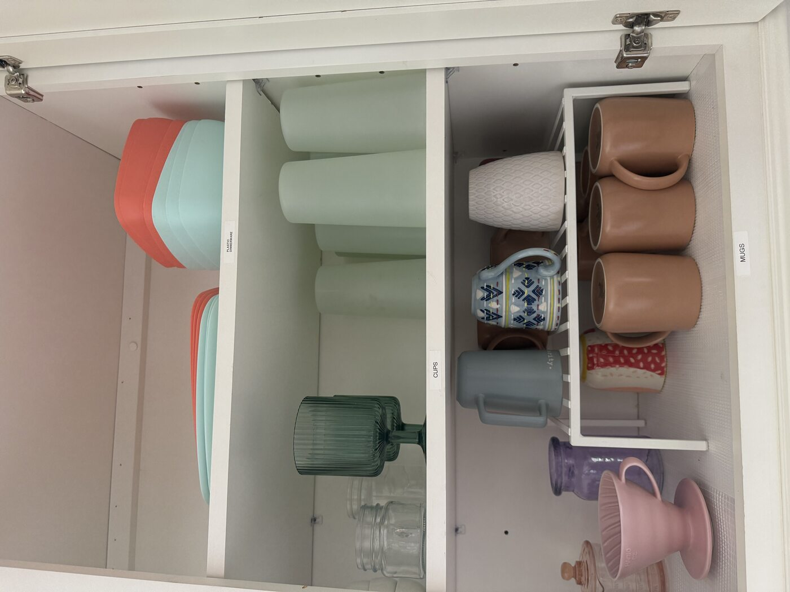
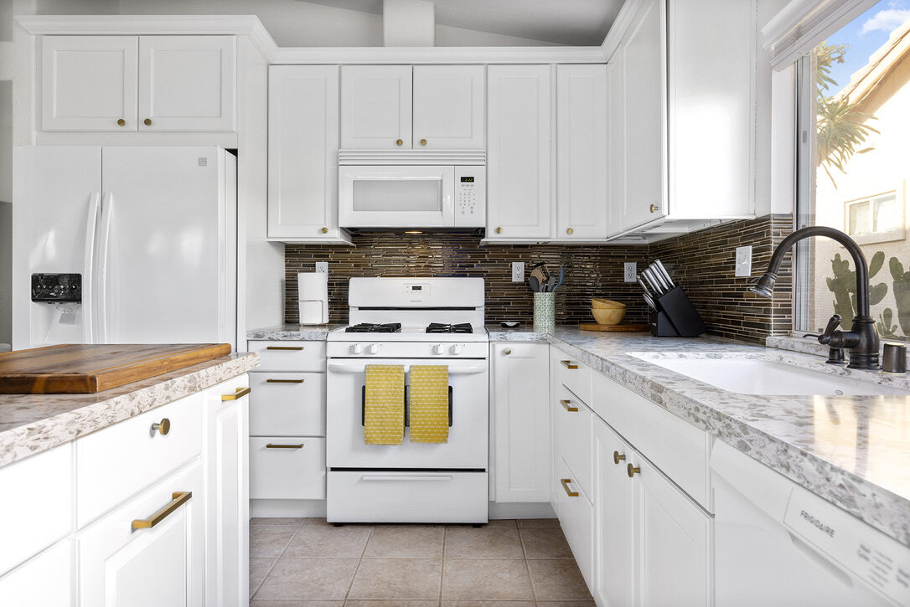
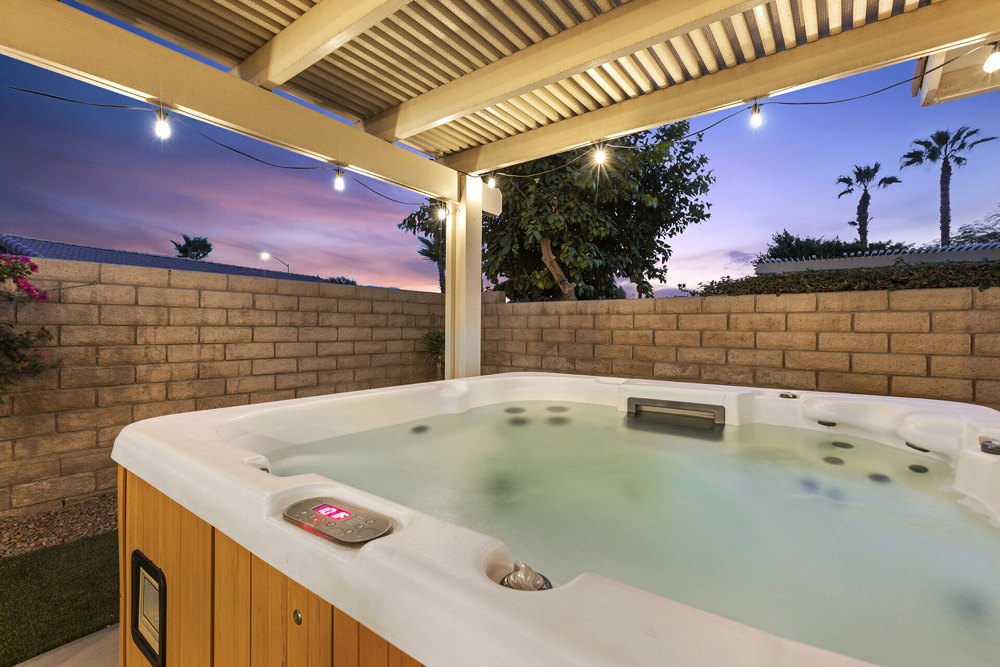
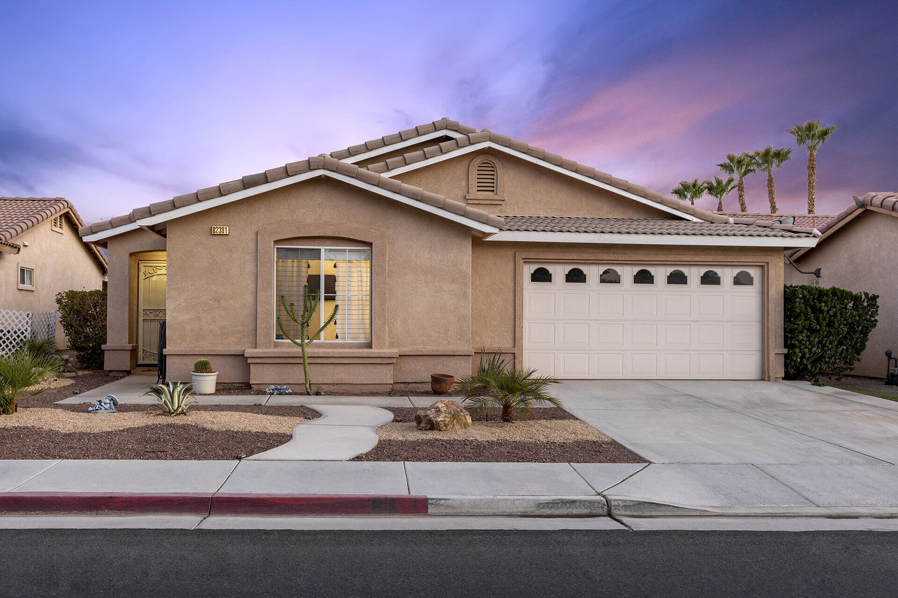

The Cozy Cactus is a 3-bedroom, 2 bathroom house in Indio, CA, walking distance to the Empire Polo Grounds, home of the renowned Coachella and Stagecoach music festivals. It was a blank canvas. Decent bones, yellow painted walls, large kitchen, your grandmother's furniture, and traditional brown. You know exactly the kind of house I am talking about!
Follow along to read about my journey to becoming a 4x vacation rental owner, property manager, Youtube university student, a kind-of handy woman, decent interior designer, and bargain shopper. This series of blogs is part reflection on what I've learned as a short term rental host, and maybe some inspiration that you, too, can do this, because I still feel like I don't know what I'm doing!
What I Built Instead
Here's what I changed. First, I hired Dawn Asher, of The Olive Jar. Not only did she help me unify the design into one cohesive home, but she also helped me reframe my hospitality mindset, that every detail matters, and creating moments of experiential hospitality (her buzz words!) would set me apart from the rest of the cookie cutter homes in the desert. Turns out, she is a genius, and she was right.

Dawn Asher's transformation: from traditional brown to turquoise, coral, and pineapple yellow
A few things I did that guests have raved about:
I labeled everything.
Where the batteries are. Where the extra linens go. Which drawer has the baby spoons. Which cabinet has the Tupperware lids (because that's always the mystery, right?). I didn't want guests hunting for things at 7am while their little ones are screaming for breakfast. One guest told me the labeling system was "unprecedented." Turns out basic organization is revolutionary in the vacation rental world. To be honest, my own home is not as organized as my vacation rentals. If I, the homeowner, cannot find where the forks are, how do I expect a guest to?

Everything labeled: batteries, extra linens, baby spoons—exactly where you'd look for them

The pantry system that made one guest cry (happy tears): Tupperware lids that actually match
I bought infant gear that actually works.
I bought elevated baby gear, including a Stokke high chair, not the wobbly plastic disasters from the clearance aisle. Sound machines in every bedroom because sleep matters. Shoot, I'm a grown woman, and I travel with my own sound machine! Outlet covers, cabinet locks, Keekaroo changing table, etc. Dawn curated a whole Family Kit for The Cozy Cactus, and it has proven to be widely successful. We added things you don't realize you need until 10pm on vacation: bottle warmer, bottle brush, changing pad, diaper pail. Not because I'm trying to win "Host of the Year," but because those 11pm panicked messages were solvable problems.

Elevated baby gear: Stokke high chair, not wobbly plastic disasters

The nursery corner: pack-n-play, sound machine, changing station—everything families need

Dawn's Family Kit: bottle warmer, baby monitor, outlet covers—solving those 11pm panicked messages
I designed the kitchen for families, not just wine glasses and a corkscrew.
Full set of kids' dishes, sippy cups, blender for baby food (or margaritas). Drawer dedicated to plastic bags and Ziplocs because parents need those constantly. Coffee bar with good beans because tired parents deserve decent coffee, not the preground stuff that tastes like cardboard and been sitting there for who knows how long.

Not just wine glasses and a corkscrew—actual family infrastructure

Coffee bar with good beans—because tired parents deserve better than cardboard
I created a fun backyard moment with an eye catching mural, hot tub, and putting green.
As soon as you step outside, you're greeted with a beautiful outdoor oasis where your family can use the Traeger grill while you sip on your morning coffee. Kids run around in the enclosed backyard, channeling their inner Tiger Woods on the mini golf course. Parents and kids love it.

The eye-catching mural: Instagram-worthy but designed for actual family fun

Hot tub at sunset: where parents finally exhale

The putting green: channeling inner Tiger Woods while parents sip coffee
The Details That Matter
Here's what guests notice after they arrive, the stuff that doesn't photograph well but makes the difference between surviving and actually resting.
I organize the drawers.
Everything has a place. I don't just stock the kitchen and walk away. Spatulas in one drawer, serving spoons in another, kids' utensils separate. Tupperware lids actually match the containers. Revolutionary, I know.
I respond in under 1 minute.
Always have. Not because I'm neurotic, but because vacation questions are time-sensitive. "Where's the pack-n-play?" at 8pm is not a question you want answered the next morning. I keep my phone on me. I answer immediately. It's not complicated.
I put out things you don't have to ask for.
Pool floaties in the garage. First aid kit in the kitchen drawer (labeled, of course). Extra outlets in every bedroom. Stain remover under the kitchen sink because kids are chaos machines. Blackout curtains in every room because naps are sacred. The goal isn't perfection. It's anticipation. What do families need before they realize they need it?
What Guests Actually Say
A family of five checked out and told me it was "the first time we have truly rested during our vacation with our 3 children." They came back completely rejuvenated, not just exhausted in a different location. Another guest said my labeling system was unprecedented in 10 years of Airbnb stays. She wasn't exaggerating, she'd stayed in 40+ rentals. I have repeat guests. Groups of friends who come back for Coachella every year. Couples who stayed before they had kids, then came back with infants because they trusted the setup. Even grown men who just want a well-organized house with a good coffee bar and a pool that doesn't have suspicious floaties from the previous guests. The Cozy Cactus isn't baby-themed - it's thoughtfully designed for humans who appreciate when someone cares.
One mom wrote: "Everything was exactly where it should be. We didn't have to ask for anything. It felt like someone actually thought about what families need." That's the whole point.
What The Cozy Cactus Actually Is
I wasn't trying to be revolutionary. I just wanted families to actually rest. Most vacation rentals treat kids as an inconvenience to work around. I treated them as the reason the house exists. The Cozy Cactus is colorful: turquoise and coral and pineapple yellow, because why not? It's playful without being chaotic. The design is fem-leaning but appeals to everyone because good design isn't gendered, it's just good. The vibe is "organized chaos" except actually organized, so it's just… functional joy. It's not a sanctuary in the spa-retreat sense. It's a sanctuary in the "you can finally exhale" sense. Where parents stop managing every detail because someone already managed them. Where your little ones have what they need without you hunting for it at midnight. Where vacation actually means rest, not just a different location to be exhausted in.
I'm not trying to win design awards. I'm trying to solve the problem of families who book a vacation rental and end up more exhausted than before they left. That's it. That's The Cozy Cactus. It works. Families keep coming back. They rest. They rejuvenate. They don't just survive—they actually enjoy it.
If that sounds like what you need, you know where to find us.

A place where families actually rest—15 minutes from Coachella, designed for humans who appreciate when someone gives a damn